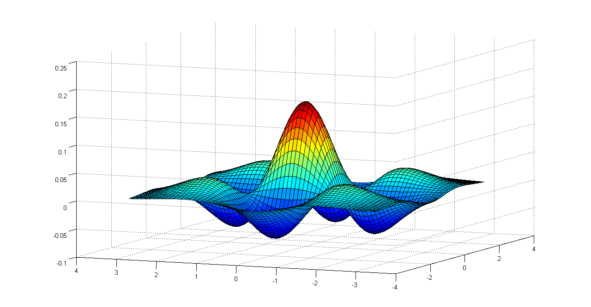

This website uses jsMath, a javascript package for equation rendering.Additionally, you may want to download TeX fonts for better display of equations. If java script is disabled on your browser ,the material on this website is also available in Book Format. This book can be downloaded from here.